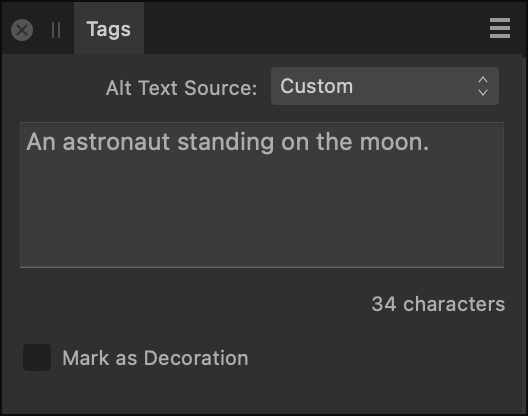

The Tags panel allows you to add information to your document so that when it's exported to PDF, assistive technology is able to provide the reader with a better experience.

The Tags panel.
The following settings are available on the Tags panel:
Alt Text Source—For a selected image, select a metadata field—XMP:Title, XMP:Description, XMP:Headline, XMP:Alt Text (Accessibility) or XMP:Extended Description (Accessibility)—to use as the image's alt text. For any type of selected object, select Custom to provide your own alt text.
Alt Text—Type custom alt text that you wish to include in tagged PDFs.
Character count—Displays the number of characters in the provided alt text.
Mark as Decoration—Select to tag the selected object as decorative, so it will be ignored by assistive technology such as screen readers.